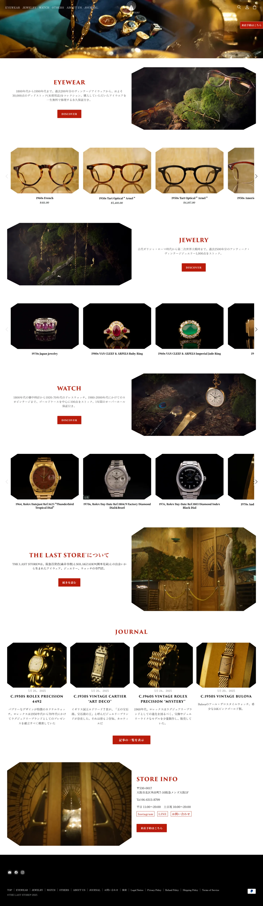

THE LAST STORE - EC

スクロールできます
The Challenge
ビンテージアイウェアやジュエリーを取り扱うTHE LAST STOREでは、実店舗や商品の持つ独自の世界観をオンライン上でも自然に伝えられるECサイトの構築が求められていました。
あわせて、海外からの利用も想定し、多言語対応や購入前の問い合わせ導線を整える必要がありました。
The Solution
Shopifyのテーマ選定から関わり、CSSやLiquidを用いてデザインや表示の細かな調整を行いました。
商品の雰囲気やブランドイメージが伝わるよう配慮しながらカスタマイズを進め、インバウンド向けの多言語対応や見積もりフォームも実装。より幅広いユーザーが利用しやすいECサイトに仕上げました。